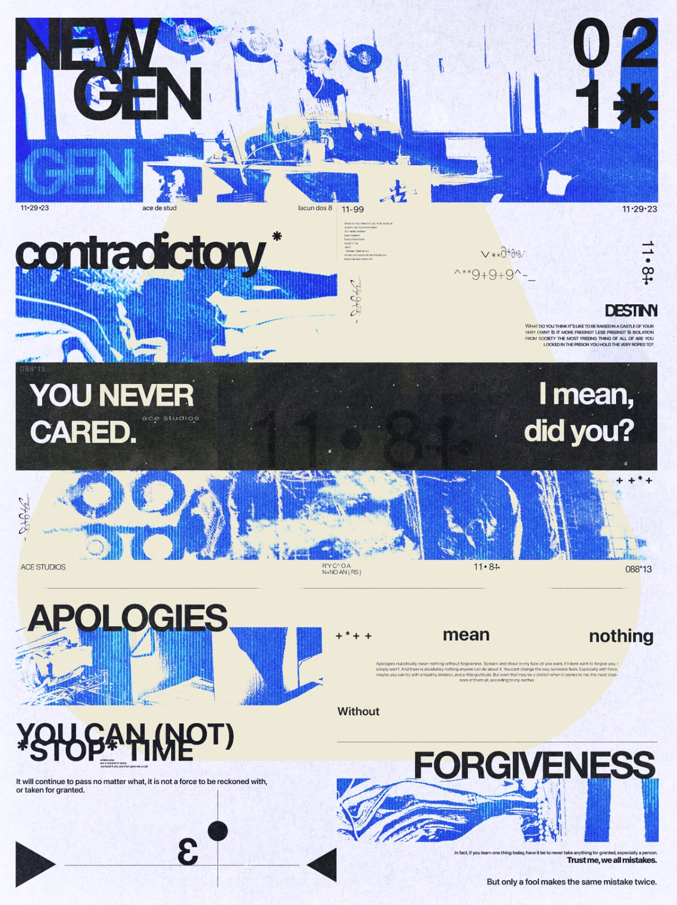
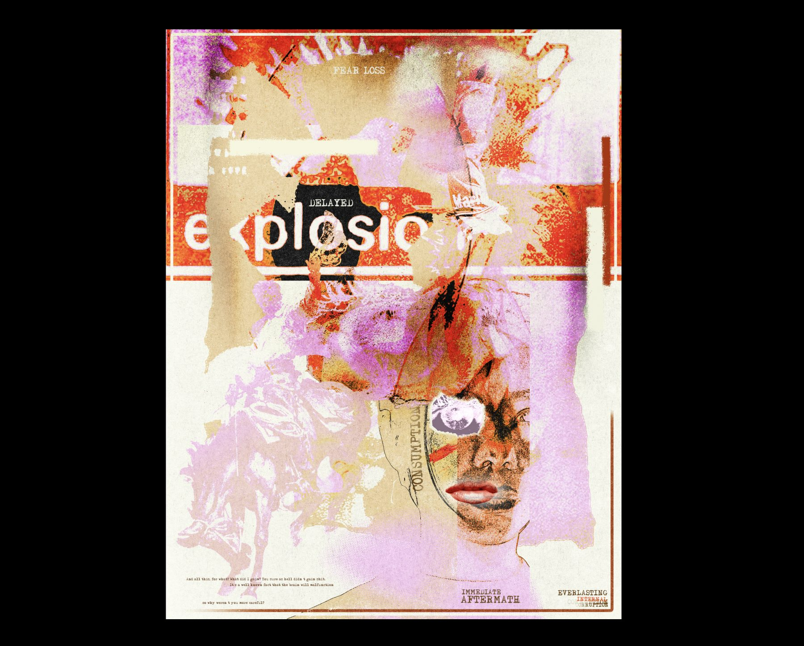

Work / Poster experiments
Type Studies
Two sheets made to work a problem out rather than to sell anything.

Working set
The faces I keep coming back to, and what each one is actually for. Drag a slider to resize, or click a line and type your own words into it.
Archivo Black
The workhorse for headlines. Cut tight and set large, it holds a poster on its own. It falls apart small, so it never goes below about 40px.
Bebas Neue
Stacks into a narrow column without losing weight. Where a sheet has to carry more words than it has room for.
Space Grotesk
Technical without being cold. The one I reach for when a spec sheet has to sound like a brand.
Instrument Serif
The counterweight. One serif line against a page of grotesk does more work than another weight ever would.
Space Mono
Captions, metadata, anything that should read as a label rather than a voice. It is the mono running across this whole site.
- Year
- 2024
- Services
- Typography, Poster design
- Deliverables
- Poster studies, working type set
The first sheet is a grid stress test: a single column of statements broken across weights and sizes until the hierarchy nearly collapses, then pulled back one step from the edge.
The second goes the other way. Layered scans, halftone and torn paper with the type buried in it, to find how little of a word can still be read once the texture is fighting it.
Neither was briefed. They exist to find the limit, which is what makes them useful on the jobs that are briefed.
Below is the working set - the faces I keep coming back to, and what each one is actually for. The samples are live: drag the slider, or click the line and type your own words into it.
“They exist to find the limit, which is what makes them useful on the jobs that are briefed.”

Fig. 01 | Texture over type
Next project
Team & Club Apparel → Screen-printed merch | 2024